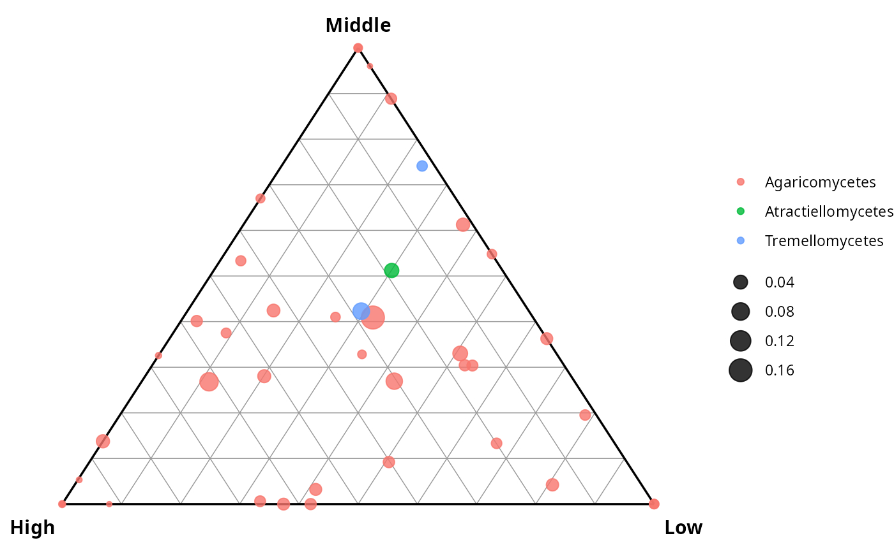
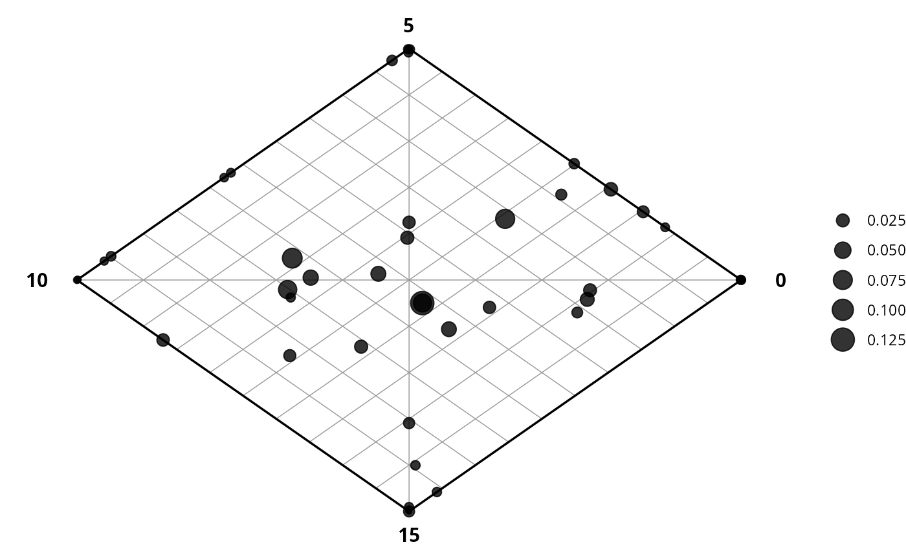

Displays each taxon as a point inside a triangle (3 groups) or a diamond (4 groups) whose corners represent the sample groups. A taxon plotted near one corner is most abundant in that group.
The coordinate math follows the standard de Finetti diagram (Wikipedia: Ternary plot): $$x = \frac{2b + c}{2(a+b+c)}, \quad y = \frac{\sqrt{3}\,c}{2(a+b+c)}$$ where \(a,b,c\) are the mean relative abundances in the left, right, and top groups respectively.
The diamond projection for 4 groups uses: $$x = \frac{a - c}{a+b+c+d}, \quad y = \frac{b - d}{a+b+c+d}$$ (right, top, left, bottom).
This is an independent implementation; the coordinate formulas are in the public domain (de Finetti 1926; see also Armstrong 2014, IEEE VIS).
Usage
ternary_pq(
physeq,
fact,
level_order = NULL,
raw = FALSE,
normalize_groups = TRUE,
color_rank = NULL,
size_by = c("abundance", "log10_abundance", "equal"),
label_by = NULL,
label_size = 2.5,
add_grid = TRUE,
point_alpha = 0.8
)Arguments
- physeq
(required) A phyloseq::phyloseq object.
- fact
(required) Either a single character string matching a variable name in
sample_data(physeq), or a factor of lengthnsamples(physeq). Must have exactly 3 (ternary) or 4 (diamond) levels.- level_order
(character vector, default
NULL) Order of levels; for ternary plots this is (left, right, top); for diamond plots (right, top, left, bottom). WhenNULL, the natural factor level order is used.- raw
(logical, default
FALSE) IfTRUE, raw counts are used instead of relative abundances.- normalize_groups
(logical, default
TRUE) IfTRUE(andraw = FALSE), each group is given equal weight regardless of its sample count. IfFALSE, weight is proportional to sample count.- color_rank
(character, default
NULL) Column name from@tax_tableto map to point colour.- size_by
(character, default
"abundance") How to scale point size. One of"abundance"(overall relative abundance),"log10_abundance", or"equal"(all the same size).- label_by
(character, default
NULL) Column name from@tax_table(or"taxon"for row names) to annotate points with text labels.- label_size
(numeric, default
2.5) Text size for labels.- add_grid
(logical, default
TRUE) IfTRUE, a 10-interval reference grid is drawn inside the triangle / diamond.- point_alpha
(numeric, default
0.8) Transparency of the points.
Value
A ggplot2::ggplot object.
Examples
# \donttest{
data(data_fungi_mini, package = "MiscMetabar")
# Ternary plot: Height has 3 levels (High, Low, Middle)
ternary_pq(data_fungi_mini, fact = "Height", color_rank = "Class")

# Diamond plot: Time has 4 levels (0, 5, 10, 15)
ternary_pq(data_fungi_mini, fact = "Time")

# }
if (FALSE) { # \dontrun{
ternary_pq(data_fungi_mini, fact = "Height", color_rank = "Family", add_grid = FALSE)
ternary_pq(data_fungi_mini, fact = "Height", size_by = "log10_abundance")
} # }